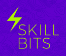

Cześć Kraków!
Rails Girls comes to Krakow for the fifth time! Join the free, two-day crash-course to the exciting world of building web applications with Ruby on Rails.
Apply! http://railsgirlskrakow.herokuapp.com/
You learn designing, prototyping and coding with the help from our coaches.
You need your own laptop, curiosity and a sprinkle of imagination!
Want to help? We are looking for sponsors! Email us railsgirlskrakow@gmail.com
| 18:30 - 21:00 |
|---|
| 9:00 - 18:00 |
|---|
How much does the workshop cost? Nothing, it's free! You just need to be excited! And please bring your laptop.
Who is this aimed for? Women of any age with basic knowledge of working with a computer. We’ve had people of all ages taking part. Workshop and presentations are in Polish or English.
I think I might be too old for Rails Girls. You're not. It's about "girl power", not your age.
Can men attend? Yes, but women are given a priority.
But I know nothing about programming. Great, apply right now! We all have been absolute beginners at some point in our life.
Applications open:08.03.2016
Applications close:01.04.2016
Acceptances informed:08.04.2016
Workshop:15-16.04.2016
Location:
Krakow Technology Park
ul. Podole 60
30-394 Kraków
See map
 Krakow Technology Park – institution supporting innovation in Małopolska Region. Their Technology Incubator has been helping startups and young entrepreneurs since 2008. They have 30+ offices for young IT companies on favorable terms, invest in startups, organize events and support tech and startup community.
They're searching for passionate IT founders looking for a place to develop their business.
If you want to work with other startups under one roof, believe in the culture of openness and cooperation than KTP is your place to be.
Krakow Technology Park – institution supporting innovation in Małopolska Region. Their Technology Incubator has been helping startups and young entrepreneurs since 2008. They have 30+ offices for young IT companies on favorable terms, invest in startups, organize events and support tech and startup community.
They're searching for passionate IT founders looking for a place to develop their business.
If you want to work with other startups under one roof, believe in the culture of openness and cooperation than KTP is your place to be.
u2i is a web technology consulting company founded in NYC in 2001. But they've also been in Krakow since 2005. They're 40 people, and they can be everywhere right now - in one of the offices, on a plane or out, having lunch. And they're hiring.
Lunar Logic was Poland's first Rails shop. They're thrilled to be able to help RailsGirls introduce more people to the lovely land that is Rails. And they're always open to hire great developers.
Estimote, Inc. is a technology start-up building a sensor-based analytics and engagement platform. People at Estimote work smart, build fast, and ship often. They are looking for Rails devs too!
 A new player in town. They love coding and want to share their passion and skills through mentoring and workshops. Starting very soon. Subscribe to get more info.
 Basia Madej
Gosia Nowak
Basia Madej
Gosia Nowak Tomek Rusiłko
Kasia Ryniak
Justyna Stebel
Anna Ślimak
Tomek Balon
Laura Paakkinen
Kacper Madej
Marysia Szymczak
Krzysiek Czernek
Alicja Cyganiewicz, coach
@bike_lover_ka
Kasia Kurzyńska, coach
Marek Ciupak,
Tomek Rusiłko
Kasia Ryniak
Justyna Stebel
Anna Ślimak
Tomek Balon
Laura Paakkinen
Kacper Madej
Marysia Szymczak
Krzysiek Czernek
Alicja Cyganiewicz, coach
@bike_lover_ka
Kasia Kurzyńska, coach
Marek Ciupak,